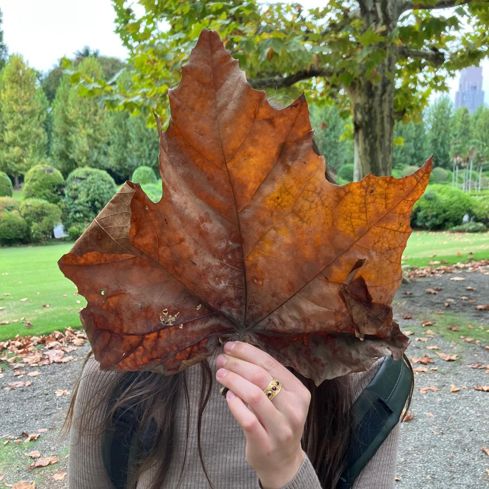

People
people
A new research group bringing together structural variation, population genetics, and genome evolution.

group leader
Charikleia (Clio) Karageorgiou
Incoming tenure-track Assistant Professor · December 2026
Clio studies the mechanisms and evolutionary consequences of structural variation in human and primate genomes.
Help shape the group.
We welcome enquiries from researchers interested in structural variation and evolutionary genetics. Information about future opportunities will appear on the Join us page.
Joining MOSAIC